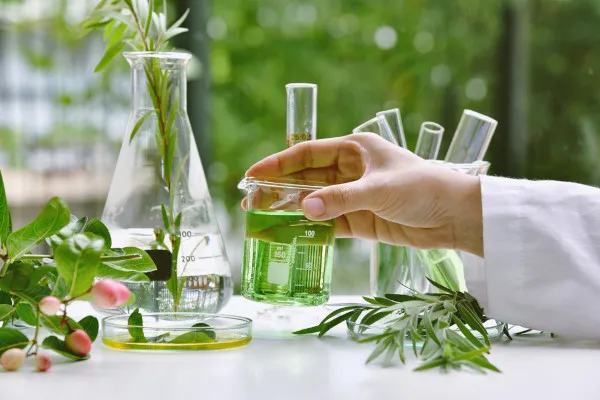
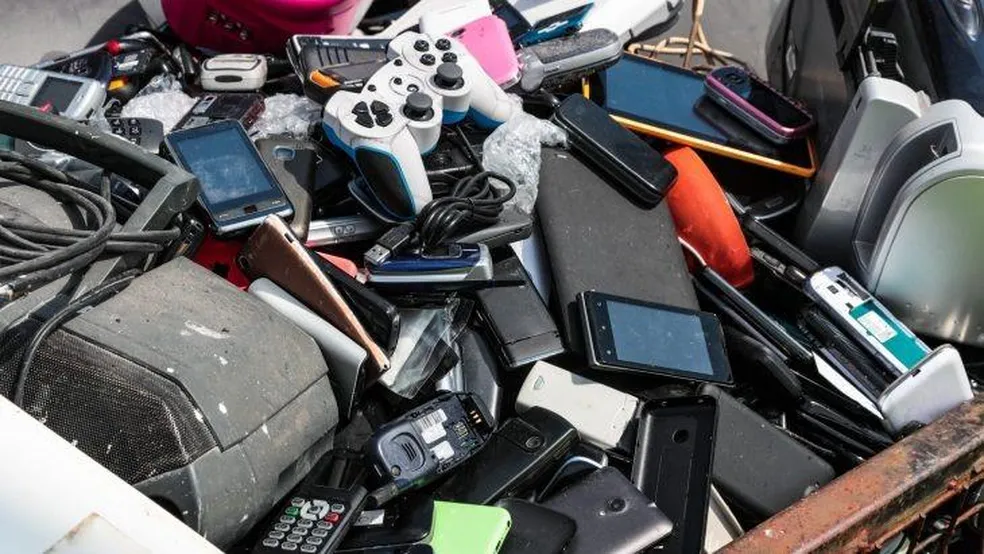
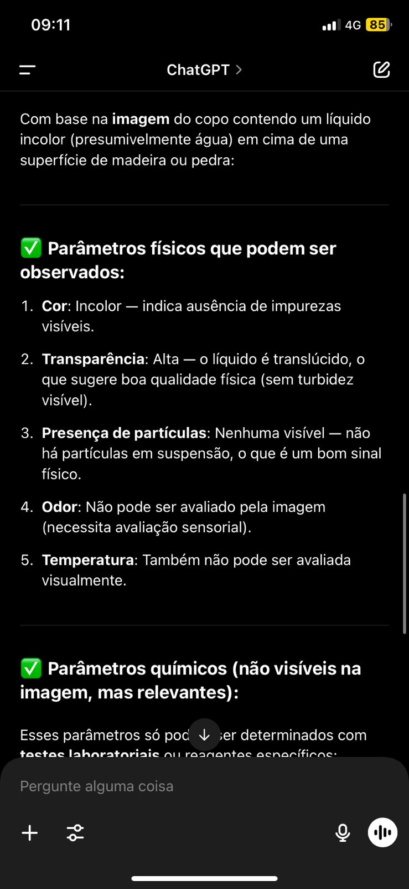
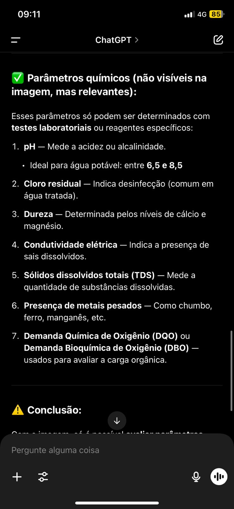
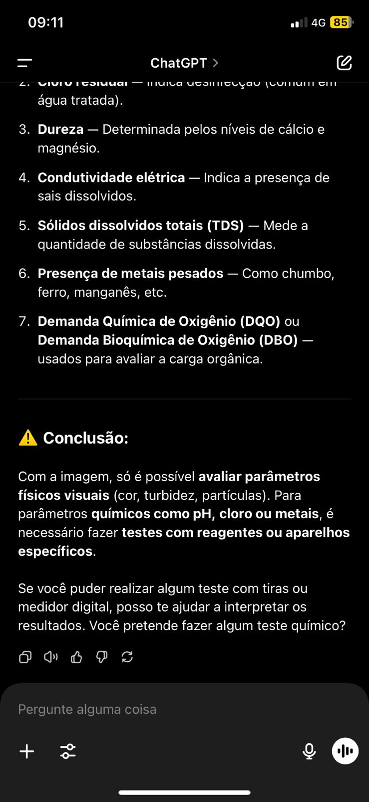

Sejam muito bem-vindos!
Olá, pessoal! É com muita alegria que nós, do 2º ano, preparamos esta apresentação para compartilhar um pouco sobre dois temas incríveis:
Inteligência Artificial e Química Ambiental.
Trabalho desenvolvido pelos alunos do 2º Ano do Ensino Médio
Professora Ellen Brandão — Química
Instituto Evangélico Hatikva

Análise da Água
IA monitora a qualidade da água em tempo real: pH, metais, coliformes e mais.
Soluções com IA
Sensores inteligentes e sistemas preditivos ajudam a evitar crises ambientais.

Sustentabilidade
IA + Química Ambiental = ferramentas poderosas para proteger o planeta.
Cuidado com os Custos
Modelos de IA, como o ChatGPT, consomem muita energia — é preciso usar com consciência.
Embora a IA seja uma aliada na luta ambiental, ela depende de grandes infraestruturas que consomem altos volumes de energia elétrica. Para que sua aplicação seja realmente sustentável, é essencial investir em fontes de energia limpa e algoritmos otimizados.
Lixo Eletrônico
IA pode ajudar a identificar, separar e reaproveitar componentes tóxicos.
Mais de 50 milhões de toneladas de e-lixo são geradas por ano!
Esse volume crescente de resíduos representa uma ameaça direta à saúde humana e ao meio ambiente. A IA pode ser usada em centros de reciclagem automatizados, ajudando a reduzir o impacto desse problema global por meio de triagens mais eficientes e inteligentes.


Parâmetros Químicos
pH 6,5–8,5 (ideal)
Cloro residual: desinfecção
Dureza: Ca, Mg
Condutividade: sais
Metais pesados: Pb, Fe, Mn
Carga orgânica: DQO/DBO

Parâmetros Físicos
Cor: incolor
Transparência: alta
Partículas: nenhuma
Odor e temperatura: não visíveis

Finalização
Avaliação visual só
Para qualidade real, testes químicos
Use tiras ou medidores digitais
Conclusão
A IA pode ajudar a proteger a água e reduzir o lixo eletrônico. Mas é essencial usá-la com ética e responsabilidade. Tecnologia com consciência = futuro sustentável.